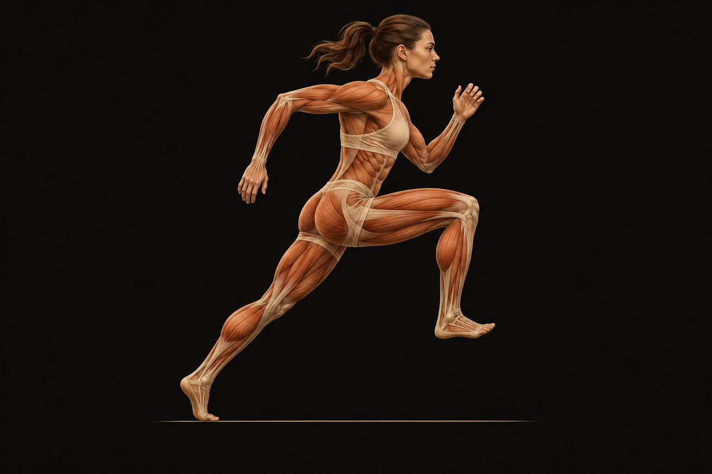
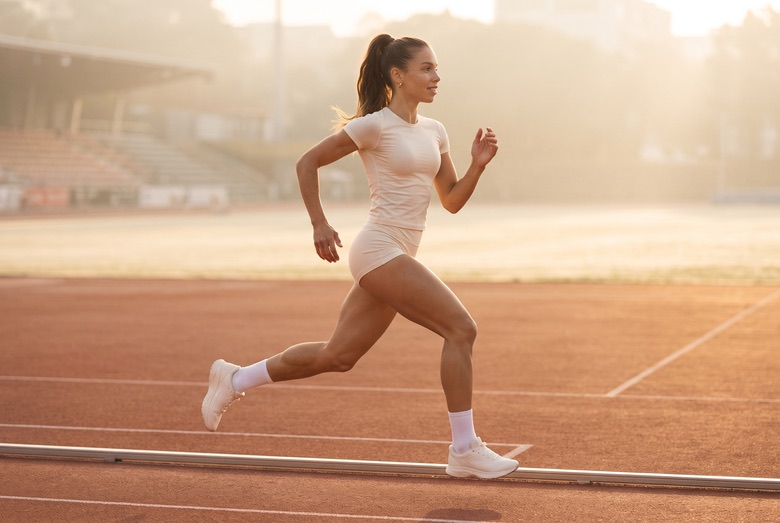

Explosive
Type II
Fast-twitch muscle fibres contribute to sprinting.

Video sprint timing · For iPhone
Find your speed again. Provarun measures your time from video and displays it to a hundredth of a second.
App Store · German appAI-generated image

As children, we simply run. Running fast is part of being human, and you can rediscover it.

Biology & physics / Working together
Your glutes, thighs, calves and hip flexors drive the movement. Your trunk and arms play their part.

AI-generated image
Explosive
Fast-twitch muscle fibres contribute to sprinting.
Strength
Greater squat-test strength after ten weeks of running sprint training.
Growth hormone
How long it remained elevated after a single 30-second sprint.
Human / What you miss
When does it give you room to run fast?
Start againEndurance
Higher peak oxygen uptake after twelve weeks of brief cycling sprints.
Time commitment
Ten rather than fifty minutes per session, with similar endurance gains.
Bone density
Higher hip bone density in masters sprinters than in non-athletic people of a similar age.
Provarun / The setup
Your time comes from the video. You choose the finish frame.

Place your phone securely beside the track, in line with the finish.
Set the countdown. Walk to the start. Wait for the starting signal.
Find the finish frame by frame. Save your time.


Provarun / Your own benchmark
50 to 800 m. Review frame by frame. See your personal bests and progress.
You can review videos from your photo library, too. Find tracks, warm-ups and technique guidance. Your videos and times stay on your iPhone. No account needed.

Optional / Provarun Pro
Timing stays free.
Pro adds a six-week training plan with target times based on your personal bests. It also covers recovery: breathing, breaks and sleep.
Annual subscription: one week free for eligible subscribers, then €29.99 a year. Renews automatically; cancel through the App Store.
Explore Pro · German appFeatures and prices: Provarun, version 1.1
Issue 50 ·
„So eine App gab es noch nicht, also habe ich eine gebaut.“
Translated from German
“An app like this didn’t exist, so I built one.”
Er hat neben seinem Studium eine App namens ProvaRun entwickelt, mit der Läufer Sprints messen und speichern können.
Translated from German: Alongside his studies, he developed an app called ProvaRun that lets runners time and save their sprints.
DIE ZEIT, issue 50, 19 November 2026
Business · “Die Einhörner werden mehr”
Fabian Franke, Anja Stehle and Jens Tönnesmann
Stories / Behind the movement

What makes us fast. How the body works during a sprint. And why your own speed is worth rediscovering.
Read the story
Video lets you check how a time was measured. Its accuracy depends on the frame rate and the start and finish you choose.
Read the story
Running fast again begins with controlled steps. A guide back to acceleration, rhythm and a time of your own.
Read the storyThe frame rate limits how precisely you can choose the start and finish. At a constant 30 frames per second, adjacent frames are about 33 milliseconds apart. A higher frame rate allows finer selection. Displaying hundredths does not guarantee accuracy to a hundredth of a second.
Timing, video review, personal bests, warm-ups and stretching are free. Pro is optional and costs €4.99 a month or €29.99 a year. Eligible annual subscribers get one week free, followed by automatic renewal. You can cancel through the App Store.
Provarun needs no account or registration. Videos, times and favourites stay locally on your iPhone. Track searches, maps, place names and journey times use the relevant external services. Pro pricing, purchases and restoring access use the App Store.
Provarun times runs from 50 to 800 metres using video. You choose the start and finish frame by frame and can review footage from your photo library.
The app interface is currently in German. An English version is on its way. You can already read the website in English.
Your next sprint
An iPhone. A stretch of track.
Your own time as your benchmark.
Provarun is a training tool. It does not provide competition timing under federation rules. Your times are intended for comparison with your own runs.
Sprinting is demanding. Train within your abilities and seek medical advice before training if you have health concerns.